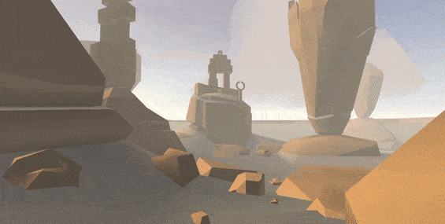

-
Aug 29,2017
22:30GRID of 9
-
Sept 9,2017
10:30GRID of 9 (Projects)
 Lumino City
Lumino City
a puzzle adventure and handmade craft game. Jane Zhang
Jane Zhang
Dust My Shoulders Off -
Sept 9,2017
22:30GRID of 9 (Aesthetic)
 Land’s End
 Paper Planes World
Paper Planes World
 Seasons: Morphosis
Seasons: Morphosis
-
Sept 6,2017
17:20Future
Smart Cities
“Smart cities use information and communication technologies (ICT) to be more intelligent and efficient in the use of resources, resulting in cost and energy savings, improved service delivery and quality of life, and reduced environmental footprint–all supporting innovation and the low-carbon economy.”
https://www.fastcodesign.com/1679127/the-top-10-smart-cities-on-the-planet
Centralized to Distributed Storage
"Everything, that happens to data, whether transport, processing or storage of data is entered into the blockchain. Afterwards what happened to data, who accessed the data, where it went and how that data was governed can be verified by anyone who has access to the blockchain. In essence the blockchain freezes the compute platform in time and users of the platform can verify that the platform is in the correct state in real-time.
It would transform our society from one that is trust based to one that is truth based,"
https://guardtime.com/blog/blockcloud-re-inventing-cloud-with-blockchains
Apps, AI, IoT, VR/AR in non game applications
New Technologies Enter Non-Tech Industries
"I predict that we will see more tech companies making focused efforts on applying their technologies to non-tech fields, including agriculture, fishing, construction, manufacturing, and many more."
https://www.recode.net/2017/1/3/14154874/2017-predictions-top-10-technology-mobile-ai-smart-home
VR operation
"Healthcare has become one of the big adopters of VR - using it both as teaching aid and to treat phobias."
http://www.bbc.com/news/technology-37576755
VR/AR Shopping
"There are two kinds of shopping: online shopping and shopping in person. VR and AR aim to close the gap between these shopping experiences. Shopping in person is great because you can try things on, but it expends a lot of energy. Shopping online is less hassle, but you can’t try on the item and sometimes you have to send things back. Take a look at the infographic below for more information!"
http://www.zenruption.com/zentech/4/28/heres-how-vr-and-ar-will-change-our-every-day-lives
IoT connect world and person
"The IoT is intended to extend data collection, smart networking, predictive analytics and deep optimization across interconnected people and most every manner of physical objects and information technology (IT) platforms around the world. Leveraging sensors, actuators, microcontrollers, mobile communications, big data and more technologies, the IoT would allow more and more useful information to be derived from more and more interconnected elements than ever before possible."
https://www.wired.com/insights/2014/12/iot-connected-person/
Cyborgs
Shimon Whiteson:"I really think in the future we are all going to be cyborgs."
http://www.businessinsider.com/researchers-predictions-future-artificial-intelligence-2015-10/#pieter-abbeel-says-robots-will-keep-us-safer-especially-from-disasters-1
Precedents
Wall-E

https://blogofarman.wordpress.com/2015/10/11/235/ -
Sept 6,2017
10:20Bring Astronomy in everyday life
Some people still believe the earth is flat
“One in four people thinks the sun revolves around the Earth and not the other way around. Four in ten Americans reject Darwin’s theory of evolution. And even some Harvard graduates believe the reason winter is colder than summer is that the Earth has moved away from the sun.”
http://nymag.com/scienceofus/2017/05/why-some-people-still-believe-the-earth-is-flat.html
Astronomy or Astrology?
“Misidentified the "study of how the positions of stars and planets can influence human behavior," as astronomy rather than what is considered a pseudoscience, astrology. ”
https://www.livescience.com/52135-american-science-knowledge-poll.html
Why people aren't interested in Astronomy?
Kyrie Irving: “the scientific realities of the world are beyond the grasp of our day-to-day experience”
http://nymag.com/scienceofus/2017/05/why-some-people-still-believe-the-earth-is-flat.html
Precedents
Cosmos: a spacetime odyssey
"A documentary series that explores how we discovered the laws of nature and found our coordinates in space and time."
http://www.imdb.com/title/tt2395695/
The Power of 10
"Powers of Ten illustrates the universe as an arena of both continuity and change, of everyday picnics and cosmic mystery. It begins with a close-up shot of a man sleeping near the lakeside in Chicago, viewed from one meter away. The landscape steadily moves out until it reveals the edge of the known universe. "
http://www.eamesoffice.com/the-work/powers-of-ten/
Scienceblind: Why Our Intuitive Theories About the World Are So Often Wrong
by Andrew Shtulman
Goal
1. Reshape how we see the world
2. Let astronomy be popular like astrology
-
Sept 6,2017
12:20Endangered Species And Biodiversity
Sixth Mass Extinction
“The populations of nearly 9,000 vertebrate species, including mammals such as cheetahs, lions and giraffes, have significantly declined between 1900 and 2015. Almost 200 species have gone extinct in the past 100 years alone — a rate of two per year. The study says the losses are indicative of the planet's “ongoing six major extinction events” and has cascading consequences for human life on Earth.”
https://www.washingtonpost.com/news/speaking-of-science/wp/2017/07/12/earth-is-on-its-way-to-the-biggest-mass-extinction-since-the-dinosaurs-scientists-warn/?utm_term=.88cc08a90b62
Paul Ehrlich: “When the asteroid hit 66 million years ago, the asteroid wasn't making a choice. Now the driver is human overpopulation and overconsumption by the rich, and that's generally accepted.”
Extinction Countdown
"Extinction data revealed a rate of 100 to 1,000 species lost per million per year, mostly due to human-caused habitat destruction and climate change."
http://news.nationalgeographic.com/news/2014/05/140529-conservation-science-animals-species-endangered-extinction/
Why Save Endangered Species?
"Because we want to."
"Nature is beautiful, and that aesthetic value is a reason to keep it, just as we preserve artistic masterpieces like the Mona Lisa or Angkor Wat."
http://www.bbc.com/earth/story/20150715-why-save-an-endangered-species
De-extinction: Bringing Extinct Species Back to Life.
1. Backbreeding: finding living species that have traits similar to the extinct species
2. Cloning: Scientists take a preserved cell from a recently extinct animal and extract the nucleus.
3. Genetic engineering: Researchers would line up the genome of an extinct animal with that of its closest living relative.
George Church:"Bringing back the giants could help convert the Arctic tundra back to grasslands that existed during the last ice age. Reviving the mammoth help slow climate change by shifting the landscape back toward the grasslands"
http://www.sciencemag.org/news/2016/09/should-we-bring-extinct-species-back-dead
Joseph Bennett:"It’s better to spend the money on the living than the dead."
http://www.sciencemag.org/news/2017/02/bringing-extinct-species-back-dead-could-hurt-not-help-conservation-efforts
Ethics Behind De-extinction
Five Major Causes
H - Habitat Loss
I - Invasive Species
P - Pollution and Pesticides
P - Population and Pets
O - Over-Hunting and Over Collecting
http://www.worldanimalfoundation.org/endangered-species.html
Precedents
Consumer Purchases Affect Species
by Keiichiro Kanemoto and Daniel Moran Books:
Sapiens: A Brief History of Humankind
by Yuval Noah Harari
Extinction: The Causes and Consequences of the Disappearance of Species.
by Paul R. Ehrlich
Why Look at Animals
by John Berger
-
Sept 18,2017
16:50Prototype 1: Land Resource Distribution


Interview Questions
1. Do you like animals?
2. Are you aware of endangered animals?
3. Do you know the reason of species extinction?
4. How much space will you propose for nature?
5. How much space do you think we have for nature?
Source from: Space For Nature: Zoological Society of London
https://www.youtube.com/watch?v=ptWmJhlhjNM&t=174s
User Test
“50-50 is fair”
“We should give all to them, we should live with animals”
“Does it include the insects like mosquitos?”
"They currently have 30 - 25 % of our land"
-
Sept 25,2017
13:20Prototype 2: Back to Wild
Interview Questions
1. Are you willing to live with animals?
2. Will it help if we bring wild life near to our daily life to let human care about the extinction?
3. Do you have any other proposed solution?
4. Do you take any action for global sustainability?
5. Are you aware that some of these animals kind are extinct?
User Test
“Human doesn't care. We are just to busy with our life”
“Living with animals is my dream"
“I'm a vegetarian"
“We are destroying their habitat if we live with them”
“I didn't feel anything. The feeling can be more extreme”